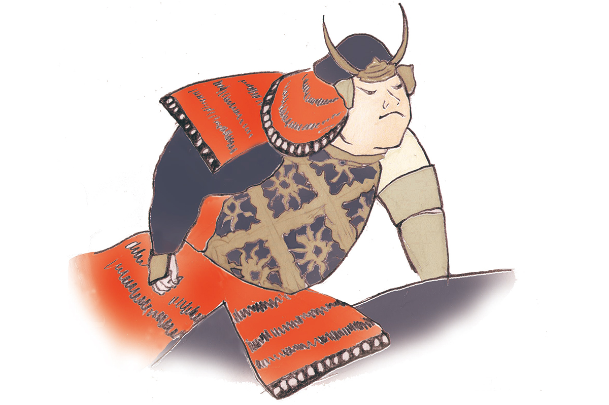
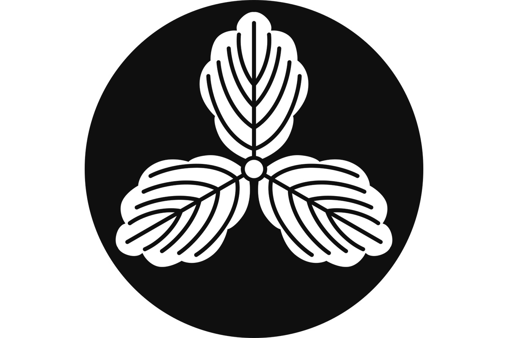
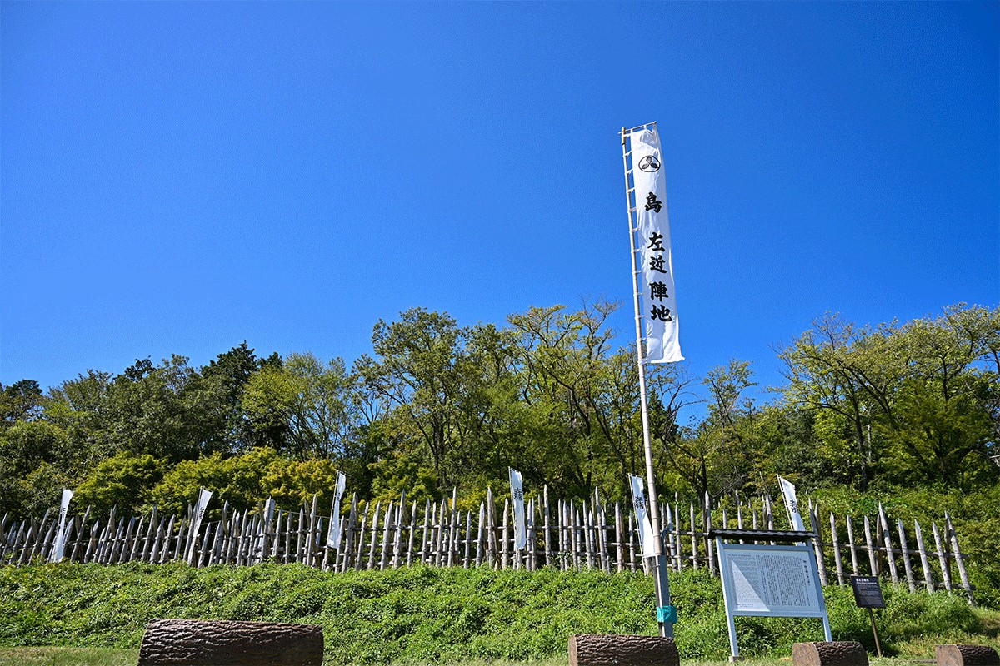

Префектура Нара · провинция Ямато · история
Сакон Сима: самурай из Ямато, который не вернулся с поля Сэкигахары

С конца XV до конца XVI века Япония жила в непрерывных войнах, и от той эпохи остались воины, о которых рассказывают до сих пор. Один из них, Сакон Сима, родом из провинции Ямато, нынешней префектуры Нара, и прославился яростной атакой в битве при Сэкигахаре.
Эпоха
Время сражающихся провинций
В конце XV века власть сёгуната Муромати окончательно рухнула, и место прежних наместников по всей стране заняли местные военные правители. Почти сто лет они воевали друг с другом за земли и влияние. Этот век японцы называют эпохой Сэнгоку, «эпохой воюющих провинций», и именно он дал больше всего полководцев, ставших героями легенд, книг и сериалов.
Сакон Сима прожил примерно с 1540 по 1600 год. Настоящее имя его было Киёоки Сима, но в истории он остался как Сакон. Откуда он родом, долго спорили: прежде его считали уроженцем острова Цусима, а к 2021 году историки сошлись на том, что он родился в Ямато, древней провинции на месте нынешней префектуры Нара.

Судьба
Правая рука Мицунари Исиды
Сначала Сакон служил клану Цуцуи, правившему Ямато, и около 1584 года покинул его. Не позднее 1592 года он поступил на службу к Мицунари Исиде (1560–1600). Исида был одним из главных администраторов при Хидэёси Тоётоми (1537–1598), правителе, который в конце XVI века объединил Японию, а после его смерти возглавил коалицию против Иэясу Токугавы. Сакону он назначил содержание в 20 000 коку риса, щедрость по меркам того времени. Отношения у них сложились необычные: не просто господин и вассал, а люди, которые поддерживали друг друга. Вместе с Исидой Сакон участвовал в походах Хидэёси в Корею.
Около 1598 года Сакон задумал убить Иэясу Токугаву (1543–1616), самого опасного соперника клана Тоётоми, будущего основателя сёгуната Эдо. Замысел не удался.
Слова, которыми он остановил господина
Однажды Мицунари Исида смотрел с главной башни замка Осака на город внизу и сказал: город процветает благодаря Хидэёси, и вряд ли найдётся человек, который не желал бы процветания дому Тоётоми. Сакон возразил ему.
«К сильным мира сего тянутся все. Но в городе много бедных людей, и тратить деньги на одно лишь войско недопустимо»
Сакон Сима
Битва
Сэкигахара, 1600 год
В 1600 году вся страна разделилась на Западную армию, которую собрал Мицунари Исида, и Восточную армию Иэясу Токугавы. Накануне решающего сражения Сакон напал на передовые отряды Восточной армии у реки Куисэ и разбил их. Эта победа подняла дух западных войск.
В самой битве при Сэкигахаре Западная армия поначалу вела бой успешно. Но Сакона ранили выстрелом стрелки полководца Нагамасы Куроды, сражавшегося за Восток. По преданию, он снова повёл людей в атаку на отряд Куроды и погиб. Тело его так и не нашли, и потому родилась легенда: Сакон будто бы спасся, добрался до Киото, стал монахом в одном из храмов и там умер своей смертью.
Сакона помнят и сегодня. В городе Хиконэ, в соседней префектуре Сига, у него есть мультяшный двойник: кот-талисман «Сима Саконьян». Есть там и «Исида Мицуньян», кот, похожий на его господина.
Где увидеть
Замок Цубаи: родные места Сакона в Хэгури
Род Сима владел землями в долине Хэгури, на северо-западе нынешней префектуры Нара, у подножия хребта Икома. Его опорой считают замок Цубаи на горе над деревней Цубаи. От замка остались только земляные валы и рвы на вершине, зато оттуда видна вся долина и горы Сиги и Икома. В местном храме Анъёдзи хранится поминальная табличка 1549 года, которую считают табличкой матери Сакона.
Место, где Сакон сражался в последний раз, находится уже за пределами Нары. Поле битвы при Сэкигахаре в префектуре Гифу сегодня стало парком: там, где стояли войска, подняты знамёна, а лагерь Сакона отмечен частоколом и флагом с его именем.

Руины замка Цубаи
- Адрес
- префектура Нара, уезд Икома, посёлок Хэгури, Цубаи
- Как добраться
- ближайшие станции Тацутагава и Хэгури линии Кинтэцу Икома, затем пешком в гору по тропе